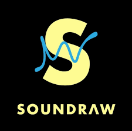

by Soundraw Inc. (Japan) · AI Music Generator with Real-Time Customization
Soundraw generates royalty-free, fully customizable music tracks in real-time. Unlike other AI music tools that give you a static output, Soundraw lets you adjust mood, tempo, instruments, and structure on the fly — hearing changes instantly.
Real-time customization is the differentiator: Most AI music tools generate a track and give you a take-it-or-leave-it result. Soundraw is different — after generation, you can adjust mood, tempo, instruments, and even which sections (intro, verse, chorus, outro) are included, hearing changes in real-time without re-generating the entire track. This makes it feel much more like a collaborative music tool than a vending machine.
Founded in Japan, Soundraw has become one of the most popular AI music tools for YouTubers, podcasters, video editors, and social media creators. Its focus on background music — tracks that support rather than overshadow content — has driven adoption among content creators who need a constant supply of fresh, royalty-free music.
The platform offers music across genres including Hip Hop, Pop, Trap, Electronic, Jazz, Classical, and more. Unlike AIVA which focuses on cinematic orchestral work, Soundraw is squarely aimed at modern content creation — the kind of music you'd hear in a YouTube tutorial, TikTok video, or podcast intro.
2025–2026 Update: Soundraw added a "Favorite Artist Style" feature that lets you describe a reference artist or song style in plain text (e.g., "upbeat Pharrell-style funk" or "dark Hans Zimmer orchestral") and generates music in that direction. It also introduced a Shorts/Reels mode optimized for 15–60 second vertical video formats.
Adjust mood, tempo, length, and instruments after generation. Changes apply instantly — no waiting for re-generation. Hear your edits in real-time.
Toggle individual sections (intro, verse, chorus, bridge, outro) on and off. Reorder them, add repeats, and build the exact structure your video needs.
Download individual stems: melody, bass, drums, chords, and FX separately. Mix them in your video editor or DAW for perfect soundtrack control.
Control the emotional intensity of the track from "Calm" to "Energetic" and mood from "Happy" to "Dark." 16 mood categories with fine-grained energy control.
Dedicated generation mode for 15–60 second vertical video content. Pre-optimized for TikTok, YouTube Shorts, and Instagram Reels length and pacing.
All paid plans include unlimited royalty-free downloads. No monthly credit limits — generate and download as many tracks as you need.
Full royalty-free commercial license on paid plans. Use tracks in client videos, monetized YouTube content, ads, podcasts, and streaming platforms.
Soundraw for Business offers an API and Shopify integration, enabling e-commerce brands to automatically generate unique background music for product pages and marketing videos.
| Plan | Price | Downloads | Stems | Commercial |
|---|---|---|---|---|
| Free | $0 | Preview only | ||
| Creator ⭐ | $16.99/mo | Unlimited | ||
| Business | Custom | Unlimited + API | White-label |
Annual billing saves ~30% on the Creator plan (~$11.99/mo billed annually). The Business plan includes API access, priority support, and white-label rights for agencies.
| Feature | Soundraw | AIVA | Boomy | Mubert |
|---|---|---|---|---|
| Real-time editing | Core feature | |||
| Section editor | ||||
| Stems export | Pro plan | |||
| Unlimited downloads | All paid | Pro only | Pro | Pro |
| Orchestral quality | Good | Best-in-class | Basic | Good |
| Starting price | $16.99/mo | $11/mo | $9.99/mo | $14/mo |
| Best for | YouTube/social creators | Film/game scoring | Song publishing | Streaming & apps |
Soundraw's real-time customization makes it genuinely the most interactive AI music tool on the market. For content creators who need frequent, fresh royalty-free music — especially for YouTube, TikTok, Instagram, and podcast content — Soundraw's unlimited downloads and interactive editing make it an excellent value at $16.99/month.
The stems export feature is a bonus that elevates it above basic music generators, giving creators and editors professional-grade mixing capabilities without a full DAW subscription.
Recommended for: YouTubers, podcasters, social media content creators, video editors, marketing agencies, and anyone who regularly needs fresh royalty-free background music with creative control.
Not recommended for: Film composers who need orchestral depth (use AIVA), users who want songs with vocals (use Boomy or Suno AI), or developers needing MIDI files for game audio engines.